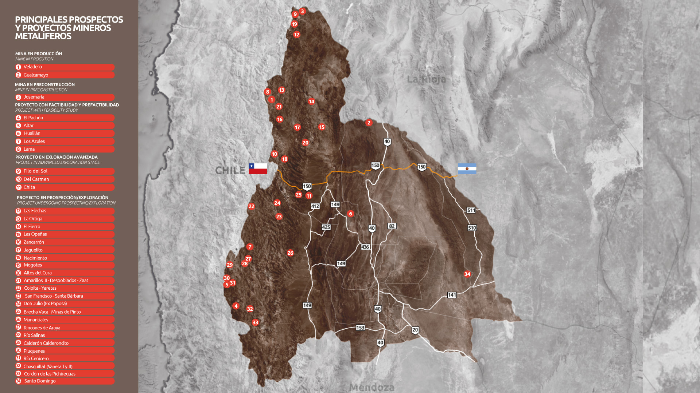

Andes Perforaciones S.R.L.
Servicios de perforación diamantina y voladura para proyectos de exploración y explotación.
Presta servicios a: Minera Veladero
Ver sitio webEstas son algunas de las empresas de servicios que confían en el talento capacitado por LMVmineria para trabajar junto a las principales operaciones mineras de San Juan.
Servicios de perforación diamantina y voladura para proyectos de exploración y explotación.
Presta servicios a: Minera Veladero
Ver sitio webInstalación y gestión integral de campamentos mineros en altura y zonas remotas.
Presta servicios a: Minera Gualcamayo
Ver sitio webProcesamiento y beneficio de minerales, con foco en extracción de oro y cobre.
Presta servicios a: Minera Casposo
Ver sitio webLogística y transporte pesado especializado para insumos y minerales.
Presta servicios a: Minera Veladero
Ver sitio webConsultoría e implementación de sistemas de seguridad e higiene laboral en yacimientos.
Presta servicios a: Minera Gualcamayo, Minera Casposo
Ver sitio webAlquiler y mantenimiento de maquinaria pesada para operaciones de superficie.
Presta servicios a: Minera Veladero
Ver sitio web